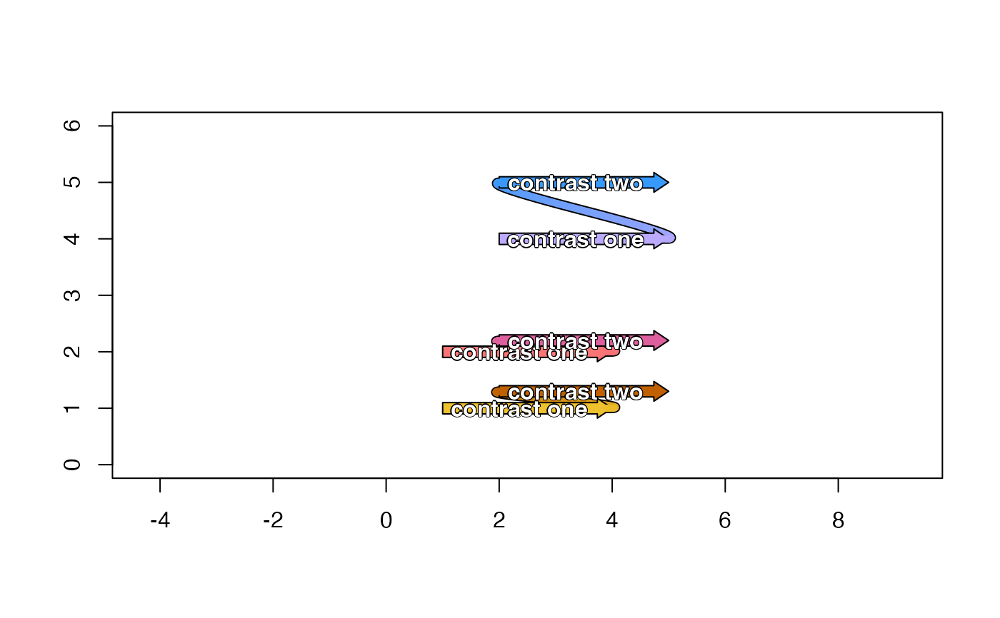

Draw two one-way contrasts using block arrows, showing a two-way connector
Source:R/jam_draw_contrasts.R
draw_twoway_contrast.RdDraw two one-way contrasts using block arrows, showing a two-way connector
Usage
draw_twoway_contrast(
x0,
x1,
y0,
y1,
color = "peachpuff",
border = "black",
extend_ex = 0.3,
extend_angle = 10,
plot_type = c("base", "grid"),
label = NULL,
label_sep = "\n",
na.rm = TRUE,
label_color = "white",
label_cex = 1,
label_font = 2,
oneway_position = 0.5,
twoway_label = NULL,
twoway_label_color = label_color,
twoway_label_cex = label_cex,
twoway_label_font = label_font,
twoway_position = 0.5,
twoway_lwd = 5,
contingency = c(none = "none", half = "scrunch", full = "loop"),
draw_oneway = TRUE,
drawing_order = c("two-two-one", "one-two", "two-one-two"),
do_plot = TRUE,
verbose = FALSE,
...
)Arguments
- x0, x1, y0, y1
numericvalues with the start and end coordinates, for the x and y axes, respectively.- color, border
characterR colors used to define color fill and border, respectively, for each block arrow,- extend_ex
numericwhich defines the amount to extend each contrast arrow when defining control points for a bezier spline from the end of one contrast, to the beginning of the next contrast. The valueextend_exextends the contrast by 20% of the contrast line length.- extend_angle
numericvalue in degrees (values from 0 to 360) which defines the relative angle from the first contrast, toward the second contrast, when defining control points for the bezier spline. The default valueextend_angle=15angles the extended line 15 degrees toward the next contrast, starting at the end of the first contrast. The same angle is used, rotated 180 degrees, for the second control point at the beginning of the second contrast.- plot_type
characterstring indicating the type of plot output:"base": base R graphics"grid": grid graphics (not yet implemented)
- label
charactervector orlistwith optional label to display atop each block arrow. For base R graphics, the label is drawn usingjamba::shadowText()to render an outline around the text.When
labelis acharactervector, it is converted to alistin two ways depending upon the number of block arrows (length(x0)):length == 1:labelis converted tolistwith length == 1.length > 1:labelis converted tolistusingas.list, then expanded tolength(x0).
When
labelis passed as alist, or afterlabelis converted to alist:Each block arrow label uses one concatenated string after calling
jamba::cPaste(..., sep=label_sep)which joins values by default using newline"\n"between each value.
- label_sep
characterstring used as separator, passed tojamba::cPaste(), so that each block arrow may contain a vector which is concatenated usinglabel_sepbetween each value. By defaultlabel_sep="\n"which prints each value on a new line.- na.rm
logicalpassed tojamba::cPaste()to define how to display NA labels:na.rm=FALSE:"NA"na.rm=TRUE:"".
- label_color
charactercolor used for thelabel.- label_cex
numericlabel font expansion factor, used to adjust the font size of the text label.- label_font
numericindicating the font face, defined as:1 = normal font
2 = bold font
3 = italic font
4 = bold, italic font
- twoway_label
characterorlisthandled the same aslabel. This label is placed atop the two-way connector, at an angle aligned with the middle of the connector curved line.- twoway_label_color
charactercolor used for thelabel.- twoway_label_cex
numericlabel font expansion factor, used to adjust the font size of the text label.- twoway_label_font
numericindicating the font face, defined as:1 = normal font
2 = bold font
3 = italic font
4 = bold, italic font
- twoway_position
numericvalue between 0 and 1 that places the twoway label at this relative position along the two-way connector.- twoway_lwd
numericline width for the two-way connector.- contingency
characterstring used to determine how to handle the two-way connector in three practical scenarios. This argument is expected to have length 3 with the following names, and is recycled to this length as necesary:"none": the bezier control points are sufficiently distant that they do not cross the halfway line between contrasts."half": the bezier control point crosses the halfway line between contrasts, but not the opposing contrast line. "Respect the halfieway.""full": the bezier control point crosses the opposing contrast line, which usually occurs when the two contrasts are rendered close to one another.
The value is used to define a contingency plan for each scenario above:
"none": the control points are used as-is with no contingency."scrunch": theextend_angleis reduced to 1/3, and the control points are used as-is. This effectively makes the "S" swoop narrower, so it fits between the two contrasts."loop": this option causes the two-way connector to loop from contrast 1, around the far side of contrast 2. Theextend_angleandextend_exis increased for contrast 1, theextend_anglefor contrast 2 is reversed, so the bezier curve aims away from contrast 1. When two contrasts are extremely close together, this technique is the best method to make the line visible. This option may provide suitable two-way labels which are not obscured by intervening one-way conrasts.
- draw_oneway
logicalindicating whether the one-way contrast should be rendered, for example if the one-way contrast was already rendered as part of another two-way contrast.- drawing_order
characterstring indicating the overall order for drawing plot features:"two-two-one": draws the two-way border, two-way fill, then one-way contrasts."one-two": draws the one-way contrasts, the two-way border, then two-way fill."two-one-two": draws the two-way border, one-way contrasts, then the two-way fill.
- do_plot
logicalindicating whether to render the results in the active graphics device, or whendo_plot=FALSEonly the underlying data is returned with no plotting.- verbose
logicalindicating whether to print verbose output.- ...
additional arguments are passed to
make_block_arrow_polygon(), includingarrow_exthe arrow size expansion factor, andhead_exthe arrow head expansion factor, which is adjusted relative to the arrow stem width.
Details
This function essentially draws two one-way contrasts
in the form: (group1-group2)-(group3-group4)
This two-way contrast is represented by two one-way contrasts:
group1-group2
group3-group4
This function renders two individual one-way contrasts, then draws a connector from the end of group2, to the beginning of group3.
TODO:
Change the order of drawing:
Draw the two-way connector border.
Draw the one-way contrasts.
Draw the two-way connector fill.
These steps would ensure the connector line does not overlap the one-way contrasts, and would allow the connector to connect directly to the contrast at the ends of the block arrows.
See also
Other jam experiment design:
check_sedesign(),
contrast2comp(),
contrast_colors_by_group(),
contrast_names_to_sedesign(),
contrasts_to_factors(),
contrasts_to_venn_setlists(),
draw_oneway_contrast(),
filter_contrast_names(),
groups_to_sedesign(),
plot_sedesign(),
sedesign_to_factors(),
validate_sedesign()
Examples
plot(NULL, xlim=c(0, 5), ylim=c(0, 4), asp=1, xlab="", ylab="")
draw_twoway_contrast(c(1, 1), c(4, 4), c(1, 2), c(1, 2),
label=c("contrast one", "contrast two"))
plot(NULL, xlim=c(0, 5), ylim=c(0, 4), asp=1, xlab="", ylab="")
draw_twoway_contrast(c(1, 1), c(4, 4), c(1, 2), c(1, 2),
contingency=c("loop"),
label=c("contrast one", "contrast two"))
#> Warning: number of items to replace is not a multiple of replacement length
#> Warning: number of items to replace is not a multiple of replacement length
plot(NULL, xlim=c(0, 5), ylim=c(0, 6), asp=1, xlab="", ylab="")
draw_twoway_contrast(c(1, 2, 1, 2, 2, 2), c(4, 5, 4, 5, 5, 5),
c(1, 1.3, 2, 3, 4, 5), c(1, 1.3, 2, 3, 4, 5),
label=c("contrast one", "contrast two"),
extend_ex=0.5, extend_angle=10, color=colorjam::rainbowJam(6))
#> Warning: no non-missing arguments to min; returning Inf
#> Warning: no non-missing arguments to min; returning Inf
plot(NULL, xlim=c(0, 5), ylim=c(0, 6), asp=1, xlab="", ylab="")
draw_twoway_contrast(c(1, 2, 1, 2, 2, 2), c(4, 5, 4, 5, 5, 5),
c(1, 1.3, 2, 2.2, 4, 5), c(1, 1.3, 2, 2.2, 4, 5),
label=c("contrast one", "contrast two"),
extend_ex=0.3, extend_angle=20, color=colorjam::rainbowJam(6))
#> Warning: no non-missing arguments to min; returning Inf
#> Warning: no non-missing arguments to min; returning Inf
#> Warning: number of items to replace is not a multiple of replacement length
#> Warning: number of items to replace is not a multiple of replacement length

plot(NULL, xlim=c(-2, 8), ylim=c(1, 6), asp=1, xlab="", ylab="")
draw_twoway_contrast(
x0=c(1, 2, 1, 2, 1, 1, 0, -2, 4, 3, 2, 4),
x1=c(4, 5, 4, 5, 6, 6, 0, -2, 7, 6, 2, 4),
y0=c(1, 1.3, 2, 2.2, 4, 5, 5, 5, 3.2, 3, 6, 6),
y1=c(1, 1.3, 2, 2.2, 4, 5, 3, 3, 3.2, 3, 3.5, 3.5),
label=c("contrast one", "contrast two"), verbose=TRUE,
extend_ex=0.5, extend_angle=10,
color=colorjam::rainbowJam(12, Crange=c(90, 120)))
#> ## (14:55:49) 28Oct2024: draw_twoway_contrast(): hand: right,right,right,left,left,right
#> ## (14:55:49) 28Oct2024: draw_twoway_contrast(): new_contrast_angles:
#> contrast_angles hand angle_diff new_contrast_angles
#> 1 0 right 10 10
#> 2 180 right 10 190
#> 3 0 right 10 10
#> 4 180 right 10 190
#> 5 0 right 10 10
#> 6 180 right 10 190
#> 7 -90 left -10 -100
#> 8 90 left -10 80
#> 9 0 left -10 -10
#> 10 180 left -10 170
#> 11 -90 right 10 -80
#> 12 90 right 10 100
#> Warning: no non-missing arguments to min; returning Inf
#> Warning: no non-missing arguments to min; returning Inf
#> Warning: no non-missing arguments to min; returning Inf
#> Warning: no non-missing arguments to min; returning Inf
#> ## (14:55:49) 28Oct2024: draw_oneway_contrast(): x0: 1,2,1,2,1,1,0,-2,4,3,2,4, x: 2.5,3.5,2.5,3.5,3.5,3.5,0.0,-2.0,5.5,4.5,2.0,4.0, x1: 4,5,4,5,6,6,0,-2,7,6,2,4, y0: 1.0,1.3,2.0,2.2,4.0,5.0,5.0,5.0,3.2,3.0,6.0,6.0, y: 1.00,1.30,2.00,2.20,4.00,5.00,4.00,4.00,3.20,3.00,4.75,4.75, y1: 1.0,1.3,2.0,2.2,4.0,5.0,3.0,3.0,3.2,3.0,3.5,3.5, arrow_angle: 0,0,0,0,0,0,270,270,0,0,270,270, label_angle: 0,0,0,0,0,0,270,270,0,0,270,270
#> ## (14:55:49) 28Oct2024: draw_oneway_contrast(): x0: 1,2,1,2,1,1,0,-2,4,3,2,4, x: 2.5,3.5,2.5,3.5,3.5,3.5,0.0,-2.0,5.5,4.5,2.0,4.0, x1: 4,5,4,5,6,6,0,-2,7,6,2,4, y0: 1.0,1.3,2.0,2.2,4.0,5.0,5.0,5.0,3.2,3.0,6.0,6.0, y: 1.00,1.30,2.00,2.20,4.00,5.00,4.00,4.00,3.20,3.00,4.75,4.75, y1: 1.0,1.3,2.0,2.2,4.0,5.0,3.0,3.0,3.2,3.0,3.5,3.5, arrow_angle: 0,0,0,0,0,0,270,270,0,0,270,270, label_angle: 0,0,0,0,0,0,270,270,0,0,270,270
draw_twoway_contrast(x0=c(4, 3), x1=c(4, 3), y0=c(2, 2), y1=c(1, 1),
label=c("contrast one", "contrast two"),
color=c("gold", "dodgerblue"), extend_angle=-20)